Voice2Note
แอปจดบันทึกเสียงพูดภาษาไทยบน Android (Java + XML Views)
เป้าหมาย: พูดความคิดเป็นภาษาไทย → แปลงเป็นข้อความ → แท็กอารมณ์ → จัดเก็บเป็นโน้ตที่ค้นหาและเปิดฟังซ้ำได้
สถาปัตยกรรม: Pure Java (`0` ไฟล์ Kotlin) · UI → Repository → Data Source · SharedPreferences JSON
2. ขอบเขตฟังก์ชันหลักที่ส่งมอบ (F-01 – F-10)
REQ-1.1 · 0:45Core Journaling & Speech
- F-01 Home: ปุ่มอัดเสียง, อัปโหลดไฟล์เสียง, สร้างโน้ต, รายการล่าสุด 3 รายการ
- F-02 Live Thai STT: ถอดเสียง
th-THแก้ไขข้อความ เลือกอารมณ์/โฟลเดอร์ บันทึก MP3 - F-03 Note Detail: แก้ไขชื่อ (validate ว่าง), ย้ายโฟลเดอร์, คัดลอก, แชร์
- F-04 Safe Delete: Dialog ยืนยันก่อนลบทั้งโน้ตและโฟลเดอร์ (Cancel คงข้อมูล)
Organization, Async & Quality
- F-05 Folders & F-06 Scoped Search: CRUD โฟลเดอร์ (แยกจาก Playback) + ค้นหาตามโฟลเดอร์
- F-07 Calendar & F-08 Playback: ปฏิทินรายวัน + เล่นเสียงพร้อม
SeekBar - F-09 Background Transcription:
WorkManagerอัปโหลด/Poll (QUEUED/PROCESSING/FAILED/Retry) - F-10 Compatibility & Lifecycle: จอเล็ก/ใหญ่, Landscape, TH/EN, Light/Dark, Back &
ON_STOP
Out-of-Scope (Roadmap อนาคต): ตัด RAG, Semantic Retrieval, Karaoke Sync และ AI Mood Analytics ออกตามข้อกำหนด เพื่อลดความเสี่ยงด้าน regression
3. เส้นทางการใช้งานหลัก (End-to-End Flow)
REQ-5.1 · 1:00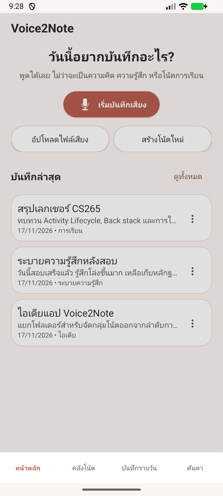
1. Home (TH Light)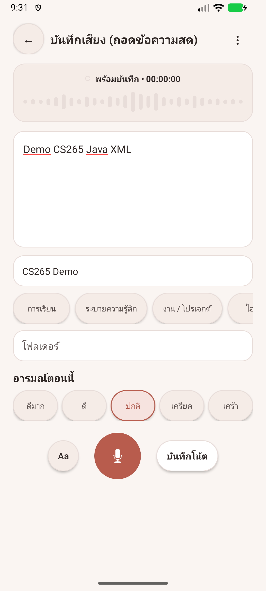
2. Compose & Mood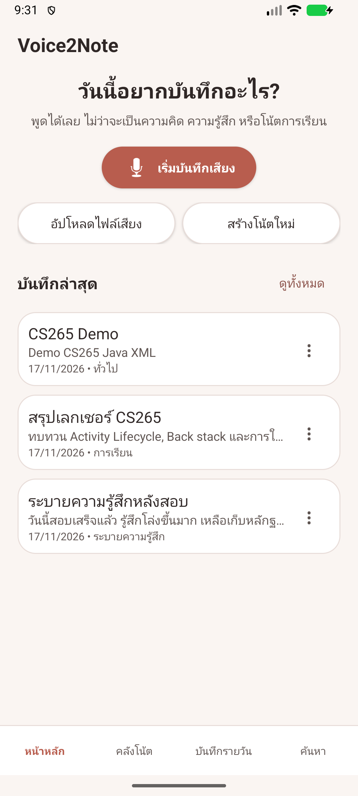
3. Saved on Home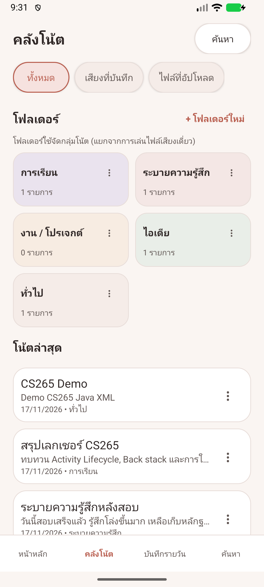
4. Library & Folders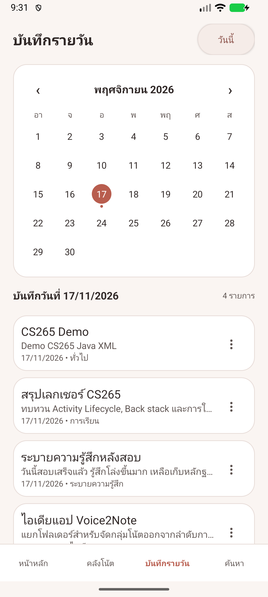
5. Calendar Journal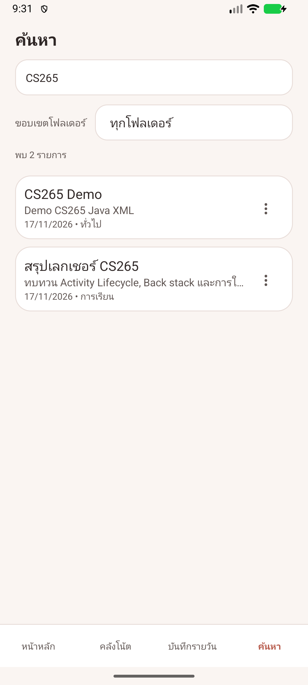
6. Folder Scoped Search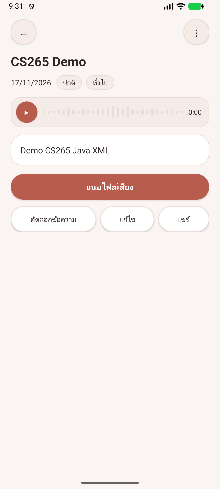
7. Note Detail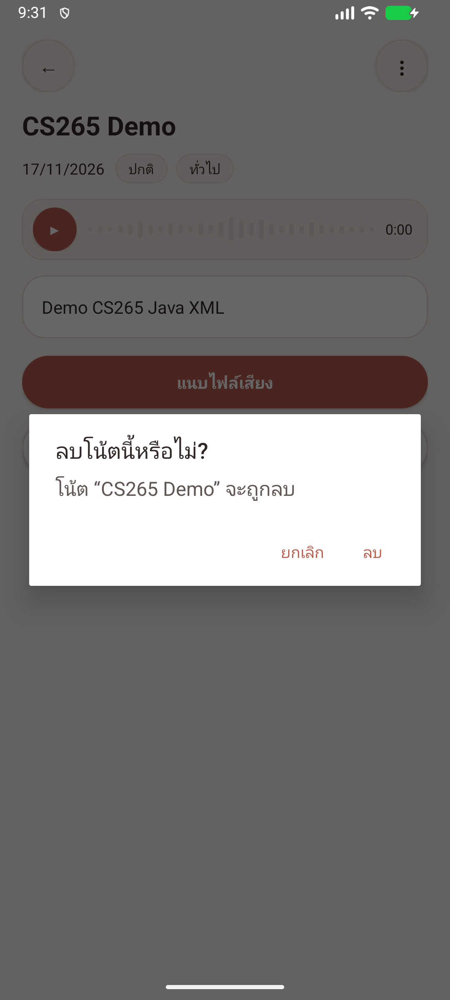
8. Delete Confirmation4. สถาปัตยกรรม Java + XML Views
REQ-2.1 · REQ-1.3 · 0:45UI Layer (XML Views)
MainActivity จัดการ Navigation, Back Stack, Permission, onSaveInstanceState
Views (HomeView, LibraryView, CalendarView, SearchView, RecordingView, NoteDetailView, PlaybackView) แสดงผลอย่างเดียว
Controllers
SpeechCaptureController + SpeechDraft + RecordingDraftViewModel
TranscriptionScheduler + TranscriptionWorker + TranscriptionClient (HTTP Multipart + Poll)
Repository & Data
NoteRepository ประสานงาน NoteStorage (items) และ FolderStorage (folders)
ใช้ UUID noteId คงที่ รักษาข้อมูล JSON เก่า (Legacy migration) และแยก Folder ออกจาก Playback
5. กลไกหลัก: Input → Processing → Output
REQ-2.1 · 0:50F-02 Thai Speech → Persistent Note
- Input: กด Mic → ตรวจสิทธิ์
RECORD_AUDIO→ พูดth-TH+ แก้ข้อความ + แท็ก Mood/Folder - Processing:
SpeechDraftใช้ generation counter กรอง callback ค้าง; API 33+ ใช้Voice2NoteMicTee(AudioRecord16 kHz PCM → MP3 viajump3r); API < 33 ใช้RecognizerIntent - Output: ตรวจว่าหยุดอัดและไม่ว่าง → บันทึกลง
NoteStorage(synchronized+commit()) → แสดงบน Home
Error Paths ที่ป้องกันไว้
- ปฏิเสธสิทธิ์ไมค์: แสดงคำแนะนำ (
permission_mic_rationale/settings) ยังพิมพ์จดเองได้ - Timeout 15 วินาที / Error: เก็บข้อความและเสียงที่อัดไปแล้วไว้เสมอ
- Storage
JSONException: Fail-closed แสดงแถบเตือน ไม่เขียนทับคลังโน้ตเดิม
6. ความท้าทายเชิงเทคนิค (Before → Fix → After)
REQ-2.2–2.4 · REQ-5.3 · 1:00Problem & Root Cause (REQ-2.2)
อาการ: เมื่อมีจำนวนโฟลเดอร์เป็นเลขคี่ (เช่น 1 หรือ 5) โน้ตทั้งหมดใต้ Grid หายไป (measH=0) บน LibraryView
สาเหตุ: Row ที่เป็นเลขคี่ใส่ new View(context) ภายใต้ ScrollView (fillViewport="true") ทำให้ View.getDefaultSize(0, AT_MOST) คืนค่าเต็มความสูงหน้าจอ (2038px) ดันโน้ตตกขอบ
containerH=0 measH=0 rowH=0 tvH=0 libH=2038
Fix & After Result (REQ-2.3–2.4)
วิธีแก้ (LibraryView.renderFolders): เปลี่ยนจาก View เป็น android.widget.Space (0, 0, 1f) ที่คืนขนาด 0 เมื่อวัดด้วย AT_MOST
ผลหลังแก้: CompatibilityAndFolderTest และชุดทดสอบทั้งหมด 29/29 ผ่านครบ โน้ตใต้ Grid แสดงผลถูกต้อง
Supporting Fixes: เพิ่ม XML constructors ใน SearchControls + คง Lifecycle observer เมื่อ re-attach ใน NoteDetailView/PlaybackView
7. ความเข้ากันได้: จอ, แนวตั้ง/นอน, ภาษา, ธีม
REQ-3.1–3.4 · 0:50 Phone 1080×2400
Phone 1080×2400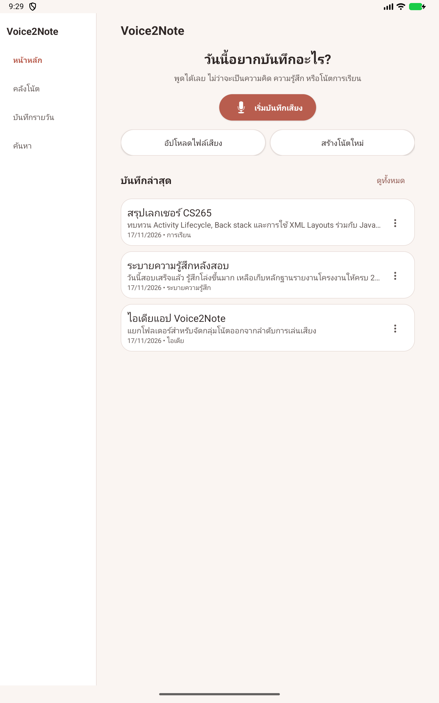
Tablet sw600dp (176dp rail)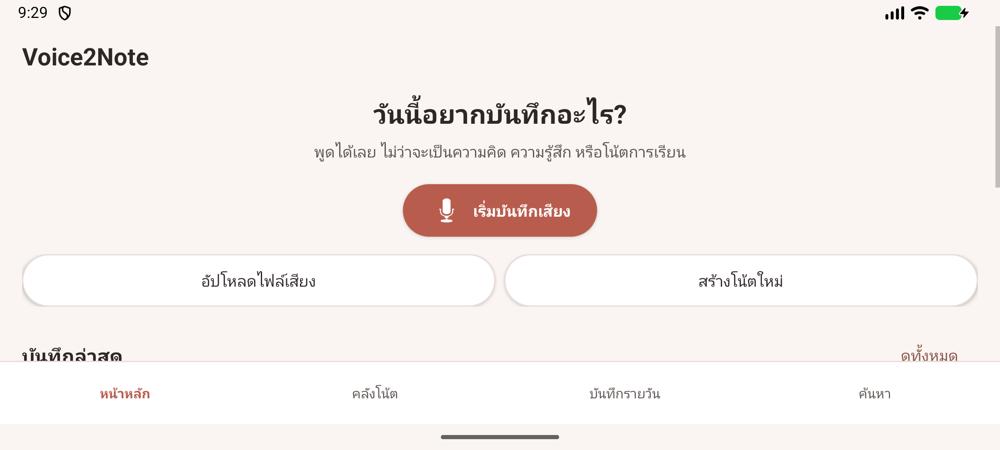
Landscape Rotation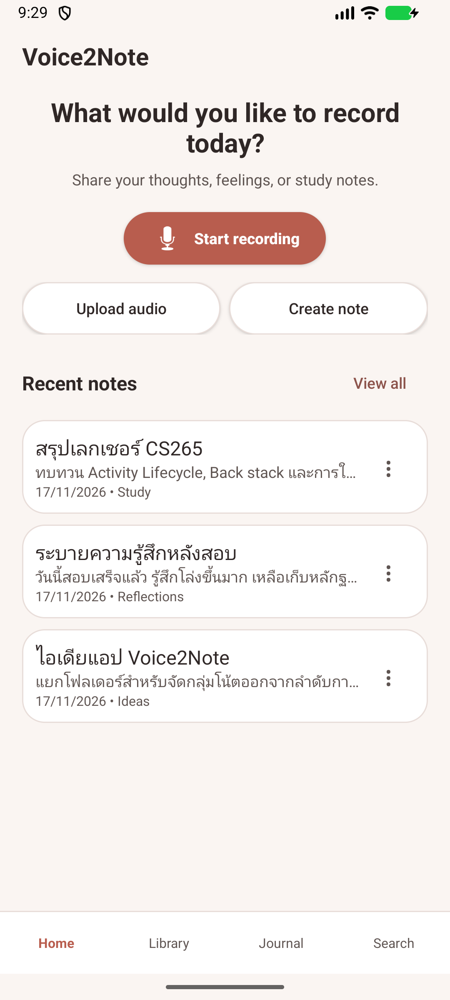
Locale EN (TH/EN)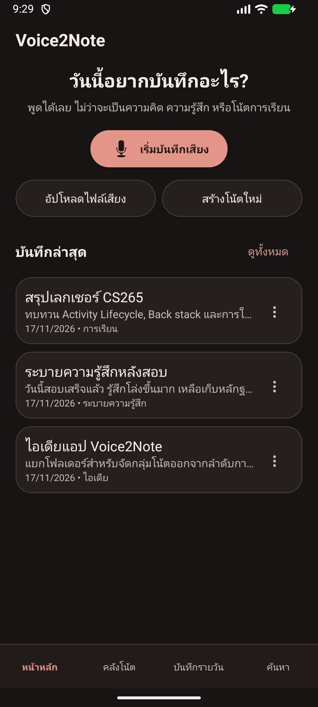
Dark Theme (Day/Night)เครื่องจริง Samsung Galaxy A12s (SM-A127F, Android 11, 720×1600): ตรวจพบและรองรับการเติม \u00a0 ท้ายข้อความไทยของ Samsung OneUI ในชุดทดสอบ UI (6a65b49)
8. Back Navigation, ยืนยันการลบ และ Lifecycle
REQ-4.1–4.4 · 0:45Back Paths (REQ-4.1–4.2)
- ปิด Rename / Sub-screen ก่อน
- หากมี Draft ค้างใน
RecordingView→ ถาม Discard หรือ Keep Editing - จาก
Library/Calendar/Search→ กลับHome - จาก
Home→ Dialog ยืนยันก่อนออกแอป
Confirm Delete (REQ-4.3)
- ลบโน้ต (Card
⋮& Detail⋮):DeleteNoteConfirmation - ลบโฟลเดอร์ (Library
⋮):FolderDialogsย้ายโน้ตไปทั่วไป - ทดสอบทั้ง Cancel (อยู่ครบ) และ Confirm (ลบจริง)
Lifecycle (REQ-4.4)
- สลับแอป (
onStop): ยกเลิกการอัดไมค์แต่เก็บ Draft + ป้องกันการอัดลับหลัง NoteDetailView/PlaybackViewหยุดเล่นที่ON_STOPและคงตำแหน่งไว้ — ใช้งานได้แม้เปิด-ปิดซ้ำหลายครั้ง
9. การทดสอบอัตโนมัติ & เชื่อมโยงรายวิชา
REQ-1.2–1.4 · 0:45Automated Test Results (51 เคส)
- JVM Unit Tests:
22 / 22ผ่าน (NoteFiltersTest,SpeechDraftTest,TranscriptionClientTest,TranscriptionTextTest,WavFileTest) - Instrumented Android Tests:
29 / 29ผ่านบนMedium_PhoneAPI 37 (0 skipped, 0 failed) และยืนยันบนSM-A127FAndroid 11
Course Traceability
- CS265 (BM02–BM09): Lifecycle, XML Multi-screen, Event/Intent, Resource Qualifiers (
values-en,values-night,sw600dp), Input Controls, Storage CRUD, Testing - รายวิชาอื่น (REQ-1.4): OS (Monitor lock & pipe thread), Database (UUID identity & migration), DSP (Windowed-sinc resample & MP3 LAME)
10. แหล่งที่มา, AI Disclosure & Live Demo
REQ-5.2 · REQ-5.4 · 1:30Attribution & AI Disclosure (REQ-5.2)
- พัฒนาเอง: โค้ดแอป 32 คลาส Java, XML Layouts, 51 เคสทดสอบ และเอกสาร
- ไลบรารีภายนอก: AndroidX (
activity,lifecycle,work— Apache-2.0),jump3r(LGPL), โลโก้ทีม (Voice2Note) - การใช้ AI: ช่วยเร่งการย้ายจาก Kotlin เป็น Java/XML, ดีบักเลย์เอาต์ และเรียบเรียงเอกสาร โดยทีมรันบิลด์และตรวจผลจริงทั้งหมด (
docs/attribution.md)
ขอบเขตจริง & สาธิตสด (SM-A127F)
- ไม่มี External Server จริง: ทดสอบอัปโหลดผ่าน
ServerSocketจำลอง + สถานะFAILED → Retryเมื่อยังไม่ตั้งค่าtranscriptionBaseUrl - Live Demo บน Samsung Android 11: เปิดแอป → อัด/พูดไทย → เลือก Mood/Folder → Save → Search → เปิดฟัง/หยุดพักเมื่อสลับแอป → ยืนยันลบโน้ต